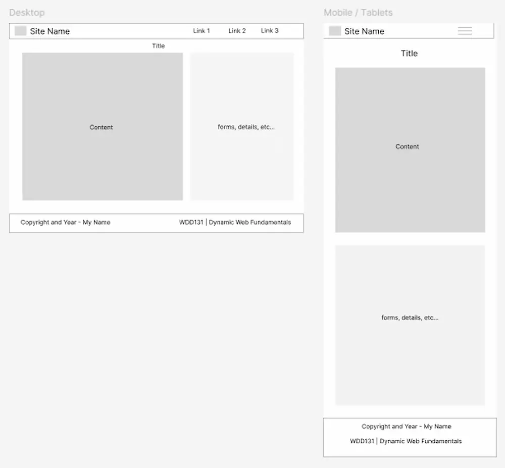

Information
Site name
ClinicX Online
Site Purpose
To provide a free scheduler for clinics and hospitals to digitalize their internal operations and enhance their capacity to deliver high-quality services.
Scenarios
This platform is perfect for hospitals and clinics that need to:
- Track and view daily patient visits at a glance
- Easily create, edit, and manage appointments in real time
- Maintain a digital registry of new and existing patients
- Replace outdated physical agendas and manual logs
User Interface (UI)
Color Schema
#243119 (header, footer and h2 elements)
#068d9d (Subtitles and buttons)
#6d9dc5 (links)
black (text)
Typography
Playfair (Google fonts)
Playwrite (Google fonts)
Wireframes
